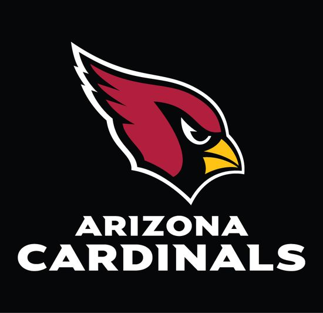

The Arizona Caridnals are a professinal football team located in Phoenix, Arizona that competes in the National Football League. The team was founded as the Chicago Cardinals in 1920. The team is owned by Michael Bidwill and coming off an 11-6 2021-2022 season where the team lost to the Los Angeles Rams in the Wild Card Round of the playoffs.
The team is currently ran by General Manager Steve Keim and Head Coach Kliff Kingsbury. Some of the key players on the team include 3rd year quartback Kyler Murray, veteran wide reciever DeAndre Hopkins, and young star safety Budda Baker.
 About the Coach